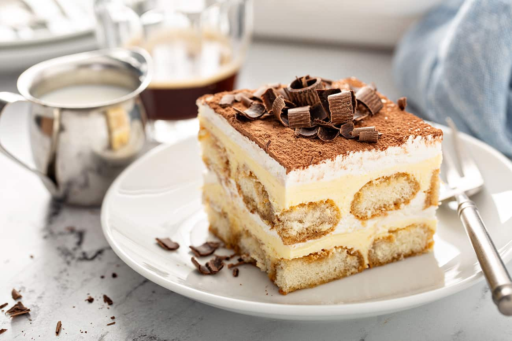

Tiramisu

Description
Tiramisu (Italian: tiramisù, [from tirami su, "pick me up" or "cheer me up"))
is a coffee-flavoured Italian dessert. It is made of ladyfingers (savoiardi)
dipped in coffee, layered with a whipped mixture of eggs, sugar, and mascarpone
cheese, flavoured with cocoa. The recipe has been adapted into many varieties
of cakes and other desserts. Its origins are often disputed among Italian
regions Veneto and Friuli Venezia Giulia.
Ingredients
- 4 large egg yolks
- 1/2 cup granulated sugar
- 3/4 cup heavy cream
- 1 cup mascarpone (8 ounces)
- 1 3/4 cups espresso
- 2 tablespoons rum or cognac
- 2 tablespoons unsweetened cocoa powder
- ~24 ladyfingers
- 1 to 2 ounces chocolate for shaving
Instructions
- Using an electric mixer in a medium bowl, whip together egg
yolks and ¼ cup sugar until very pale yellow and about tripled
in volume. A slight ribbon should fall from the beaters (or
whisk attachment) when lifted from the bowl. Transfer
mixture to a large bowl, wiping out the medium bowl used
to whip the yolks and set aside.
- In the medium bowl, whip cream and remaining ¼ cup sugar
until it creates soft-medium peaks. Add mascarpone and
continue to whip until it creates a soft, spreadable
mixture with medium peaks. Gently fold the mascarpone
mixture into the sweetened egg yolks until combined.
- Combine espresso and rum in a shallow bowl and set aside.
- Using a sifter, dust the bottom of a 2-quart baking dish
(an 8x8-inch dish, or a 9-inch round cake pan would also
work here) with 1 tablespoon cocoa powder.
- Working one at a time, quickly dip each ladyfinger into
the espresso mixture -- they are quite porous and will
fall apart if left in the liquid too long -- and place
them rounded side up at the bottom of the baking dish.
Repeat, using half the ladyfingers, until you’ve got an
even layer, breaking the ladyfingers in half as needed
to fill in any obvious gaps (a little space in between
is O.K.). Spread half the mascarpone mixture onto the
ladyfingers in one even layer. Repeat with remaining
espresso-dipped ladyfingers and mascarpone mixture.
- Dust top layer with remaining tablespoon of cocoa powder.
Top with shaved or finely grated chocolate, if desired.
- Cover with plastic wrap and let chill in the refrigerator
for at least 4 hours (if you can wait 24 hours, all the
better) before slicing or scooping to serve.
Home